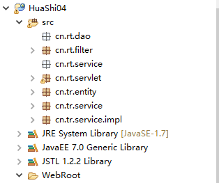

华师day04_pm
一、过滤器
1.简介
<filter><!-- 过滤器的配置 与Servlet类似 -->
<filter-name>encode</filter-name>
<filter-class>cn.rt.filter.EncodeFilter</filter-class>
<init-param><!-- 给过滤器加初始化参数 -->
<param-name>charset</param-name>
<param-value>utf-8</param-value>
</init-param>
</filter>
<filter-mapping>
<filter-name>encode</filter-name>
<url-pattern>/*</url-pattern><!-- 过滤所有 -->
</filter-mapping>
过滤器的作用：
1）请求到达目标资源之前对请求进行拦截
2）放行请求
3）响应到达浏览器之前做一些其他的操作
2.Filter的生命周期
//1.获取当前Filter的名字
String filterName = filterConfig.getFilterName();
System.out.println(filterName);
//2.获取当前Filter的初始化参数
String initParameter = filterConfig.getInitParameter("charset");
System.out.println(initParameter);
//3.获取ServletContext对象
ServletContext servletContext = filterConfig.getServletContext();
doFilter()方法
destroy()方法
服务器关闭时被调用，用来销毁Filter对象
在整个生命周期过程中只被调用一次
3.多个过滤器的执行顺序
<filter>
<filter-name>encodeFilter</filter-name>
<filter-class>com.rt.filter.EncodeFilter</filter-class>
</filter>
<filter>
<filter-name>filter2</filter-name>
<filter-class>com.rt.filter.Filter2</filter-class>
</filter>
<filter-mapping>
<filter-name>encodeFilter</filter-name>
<url-pattern>/*</url-pattern>
</filter-mapping>
<filter-mapping>
<filter-name>filter2</filter-name>
<url-pattern>/aa.jsp</url-pattern>
</filter-mapping>
4.<url-pattern>的配置规则
精确匹配：配置一个完整的路径
模糊匹配：
前缀匹配：
后缀匹配：
注意：以下这种配置是不合法（无效）的：
二、分页
思路：根据当前页码 以及 每页显示的行数 查询从数据源中查询出对应的数据 并显示到页面上。
分层开发各包介绍：

dao 中存放于于数据库直接接触的类，与数据库的操作，增删改查等方法。
entity一般都是javabean对象，例如与数据库的某个表相关联。
service 中存放服务实现的详细方法，供外部调用，等于对dao，model等进行了包装
所有包中直接存放相关接口，具体实现类，再以上包中再创建impl包存储。
servlet包：存储servlet
三、JSTL
1.JSTL简介
2.标签库
c：核心标签库，我们又称它为c标签
使用taglib指令导入标签库
<!-- set标签：用来向域中添加属性，默认添加到page域中 -->
<!-- var属性：用来设置向域中添加属性的属性名 -->
<!-- value属性：用来设置向域中添加属性的属性值 -->
<!-- scope属性：用来设置将属性添加到那个域中，可选值为：page、request、session、application -->
<c:set var="star" value="奥沙利文1" scope="request"></c:set>
<c:set var="star" value="奥沙利文2" scope="page"></c:set>
<c:set var="star" value="奥沙利文3" scope="session"></c:set>
<c:set var="star" value="奥沙利文4" scope="application"></c:set>
page域中的属性值是：${pageScope.star }<br>
request域中的属性值是：${requestScope.star }<br>
session域中的属性值是：${sessionScope.star }<br>
application域中的属性值是：${applicationScope.star }<br>
<!-- remove标签：用来移除域中的属性，默认全域移除 -->
<!-- var属性：用来设置要移除的属性的属性名 -->
<!-- scope属性：用来设置移除那个域中的属性，可选值为：page、request、session、application -->
<c:remove var="star" scope="request"/>
page域中的属性值是：${pageScope.star }<br>
request域中的属性值是：${requestScope.star }<br>
session域中的属性值是：${sessionScope.star }<br>
application域中的属性值是：${applicationScope.star }<br>
<!-- if标签：相当于Java中的if条件判断 -->
<!-- test属性：用来接收一个布尔类型的值，为true时才执行标签体中的内容 -->
<c:if test="${empty param.username }">
请输入用户名：
</c:if>
<c:if test="${not empty param.username }">
欢迎您：${param.username }
</c:if>
choose标签
<%
int age = 35;
pageContext.setAttribute("age", age);
%>
<!-- choose标签：相当于Java中的if..else.. -->
<!-- choose标签中需要嵌套子标签when -->
<!-- when标签和otherwise标签不能单独使用，必须作为choose标签的子标签，
并且when只要有一个满足要求就不再执行下面的，所以一定要注意when标签中条件的顺序 -->
<c:choose>
<c:when test="${age > 30 }">
大龄美女
</c:when>
<c:when test="${age > 20 }">
妙龄少女
</c:when>
<c:when test="${age > 16 }">
花季少女
</c:when>
<c:otherwise>
小萝莉
</c:otherwise>
</c:choose>
<!-- forEach标签：相当于Java中的for循环 -->
<!-- begin属性：指定循环的开始，该值是一个大于等于0的数，不能小于0，否则会抛异常 -->
<!-- end属性：指定循环的结束 -->
<!-- var属性：指定一个变量来接收遍历到的值，同时将该值放到page域中，域中的属性名就是变量值 -->
<c:forEach begin="1" end="10" var="index">
<a href="#">${pageScope.index }</a>
</c:forEach>
<hr>
<%
List list = new ArrayList();
list.add("张三");
list.add("李四");
list.add("王五");
list.add("赵六");
//将list放到page域中
pageContext.setAttribute("avStars", list);
%>
<!-- items属性：用来指定一个要遍历的集合 -->
<c:forEach items="${avStars }" var="star">
<a href="#">${star }</a>
</c:forEach>